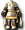

米迪爾斯獨眼怪
米迪爾斯獨眼怪
我們伺服器實際的怪物設定（不是日版 wiki 的資料）。
能力值
| 等級 | 17 |
| HP | 1044～1164 |
| AC | 83 |
| MC | 85 |
| 經驗值 | 3000 |
| 金錢 | 600～600 |
出現地圖
| 地圖 | 數量 | 出現位置 |
| 海賊村森林5 | 33 | 整張地圖 |
掉落道具
| 道具 | 基本機率 |
 強力生命之水 強力生命之水 | 5% |
 火腿 火腿 | 5% |
| a | 5% |
| [42]安迪亞斯獨眼怪變身捲軸 | 0.5% |
 水壺製作 水壺製作 | 8% |
| [11]貳式護肩材料C | 0.3% |
| [11]參式護肩材料C | 0.3% |
| [11]伍式護肩材料C | 0.3% |
| [99]陸式魔法卡組材料C | 0.1% |
| [12]伍式劍卡材料A | 0.1% |
| [12]伍式劍卡材料C | 0.1% |
| [112]杜皮拉麋鹿變身捲軸 | 0.1% |
 一般外觀附魔 一般外觀附魔 | 0.1% |
 海賊群島傳送捲軸製造法 海賊群島傳送捲軸製造法 | 0.3% |
| AC減幅器 2 階段製造法 | 0.3% |
| CON／WIS增幅器 1 階段製造法 | 0.3% |
 泰特拉武士皮甲AG 泰特拉武士皮甲AG | 0.05% |
| 泰特拉主謀之衫AG | 0.05% |
 泰特拉幻術師之袍 泰特拉幻術師之袍 | 0.05% |
| 泰特拉妖術之袍AG | 0.05% |
 泰特拉巫師袍UG 泰特拉巫師袍UG | 0.05% |
| 泰特拉修行服 | 0.05% |
| 泰特拉武道裝AG | 0.05% |
 泰特拉風之騎士鎧 | 0.05% |
 泰特拉大地騎士鎧UG 泰特拉大地騎士鎧UG | 0.05% |
 泰特拉大祭司女袍 泰特拉大祭司女袍 | 0.05% |
| 泰特拉大祭司女袍AG | 0.05% |
 泰特拉格鬥大師女裝 泰特拉格鬥大師女裝 | 0.05% |
 泰特拉女拳法裝AG 泰特拉女拳法裝AG | 0.05% |
| 泰特拉格鬥大師女裝AG | 0.05% |
 泰特拉傳說之女服 泰特拉傳說之女服 | 0.05% |
| 泰特拉德里吉爾瓦爾AG | 0.05% |
| 泰特拉梅汀長袍AG | 0.05% |
 泰特拉卡巴弗爾凱因UG 泰特拉卡巴弗爾凱因UG | 0.05% |
 混合精華處方2 混合精華處方2 | 0.1% |
| 變聰明丸S處方 | 0.1% |
| SP增幅器 3 階段製造法 | 0.3% |
| SP增幅器 5 階段製造法 | 0.3% |
| EP附魔(Grade3) | 0.1% |
| [極限長槍]製造法 | 0.1% |
| [極限之鞭]製造法 | 0.1% |
 活動護膝 活動護膝 | 0.05% |
 騎士鎧甲 1 階段製造法（男） 騎士鎧甲 1 階段製造法（男） | 0.3% |
| 反射綁腿製造法 | 0.3% |
| 墮落天使之女守護甲製造法 | 0.3% |
 勇氣長槍製造法 勇氣長槍製造法 | 0.3% |
| 魔法師鎧甲 1 階段製造法（女） | 0.3% |
| 喪失之手杖製造法 | 0.3% |
| 鬼牌MHIT附魔 | 0.1% |
| [3次]戒指2階段升級捲軸 | 0.1% |
 綠寶石原石 綠寶石原石 | 0.1% |
 血石原石 血石原石 | 0.1% |
 尖晶石 尖晶石 | 0.1% |
 神祕的鐵礦石 神祕的鐵礦石 | 0.3% |
| 墮落天使之緊身衣製造法 | 0.3% |
| 超級炸彈 1 階段製造法 | 0.3% |
| 盜賊鎧甲 3 階段製造法（女） | 0.3% |
 混沌恢復捲軸 混沌恢復捲軸 | 0.1% |
| [Lv2泰特拉鎧甲UG]升級券 | 0.1% |
| [泰特拉捲軸M]升級券 | 0.1% |
| 魔法師製造工具組 | 0.3% |
| 防禦長靴製造法 | 0.3% |
| 堅固長靴製造法 | 0.3% |
 修練用長槍 修練用長槍 | 0.05% |
基本機率再乘上伺服器的掉寶倍率；「隨機一件」是從一組道具裡抽一件。